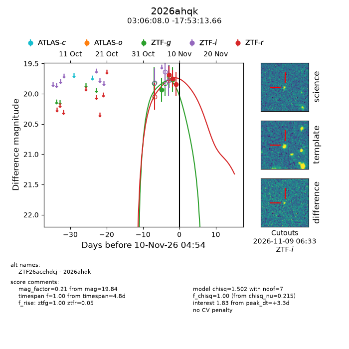
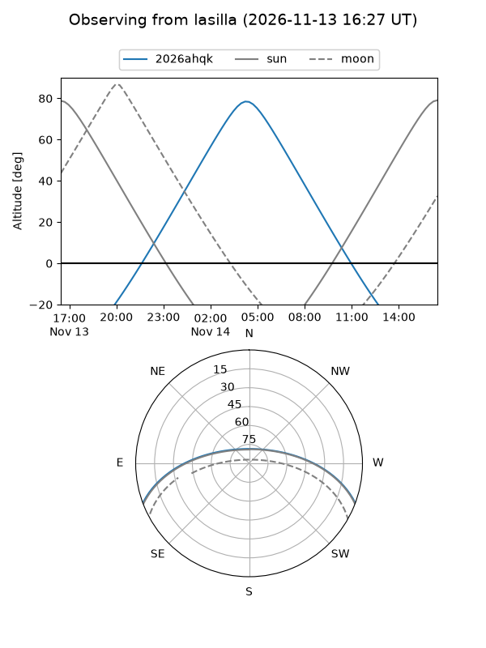
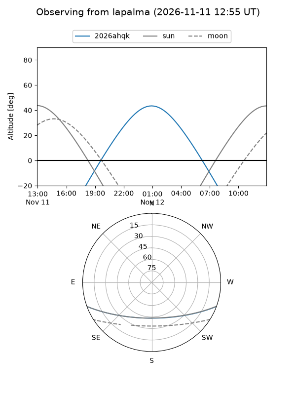
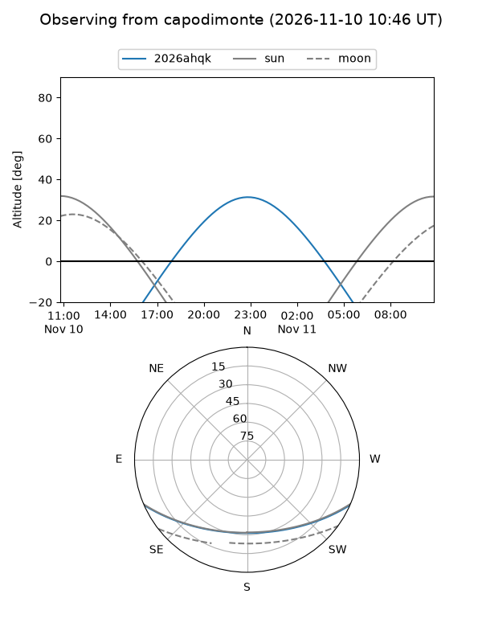
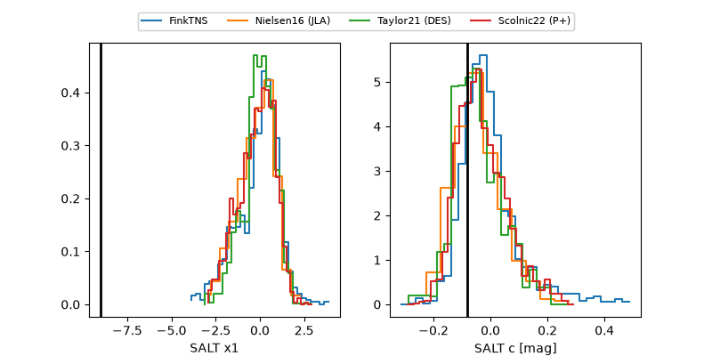

2026ahqk
Target 2026ahqk at 2026-11-10 04:57
Aliases and brokers:
FINK-ZTF: ztf.fink-portal.org/ZTF26acehdcj
Lasair-ZTF: lasair-ztf.lsst.ac.uk/objects/ZTF26acehdcj
ALeRCE-ZTF: alerce.online/object/ZTF26acehdcj
YSE-PZ: ziggy.ucolick.org/yse/transient_detail/2026ahqk
TNS name: wis-tns.org/object/2026ahqk
Direct TNS query: direct search
alt names
ZTF26acehdcj (ztf,fink_ztf)
2026ahqk (tns,yse)
Coordinates:
equatorial (ra, dec) = 46.5334,-17.88713
equatorial (HMS+DMS) = 03:06:08.02,-17:53:13.66
galactic (l, b) = (203.4873,-57.66177)
Flags:
peak dt: +3.3
Photometry:
last ztfg=19.77, ztfr=19.84
2 ztfg, 3 ztfr detections
Lightcurve

Visibility



Additional plots
